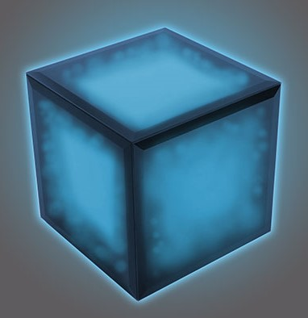

| Black - Box |
|---|
|  |
| Número de Servicio | BBX 8995-1 |
| Comienza Servicio | 17 de agosto de 2552 |
| Género | Programación adoptada Masculina |
| Descripción | Caja negra con iluminación azul |
| Color Normal | Azul |
| Afiliación | UNSC |
| RASGOS PERSONALES |
|---|
|
A diferencia de la mayoría de las IAs del UNSC, Black-Box sentía que no era necesario tener un avatar humano, considerándose como "Inteligencia Pura", prefiriendo ser vista como una caja con rasgos distintivos. Al igual que otras IA's, era capaz de dirigir las operaciones del UNSC Port Stanley sin necesidad de interacción humana. Además, tenía una muy buena opinión acerca de la interacción humana en profundidad por temor a "terminar como Cortana", de este modo los primeros días de su servicio actuaba de una forma muy formal, a veces rayando en una relación cínica con los miembros de la nave. |
CURIOSIDADES |
|